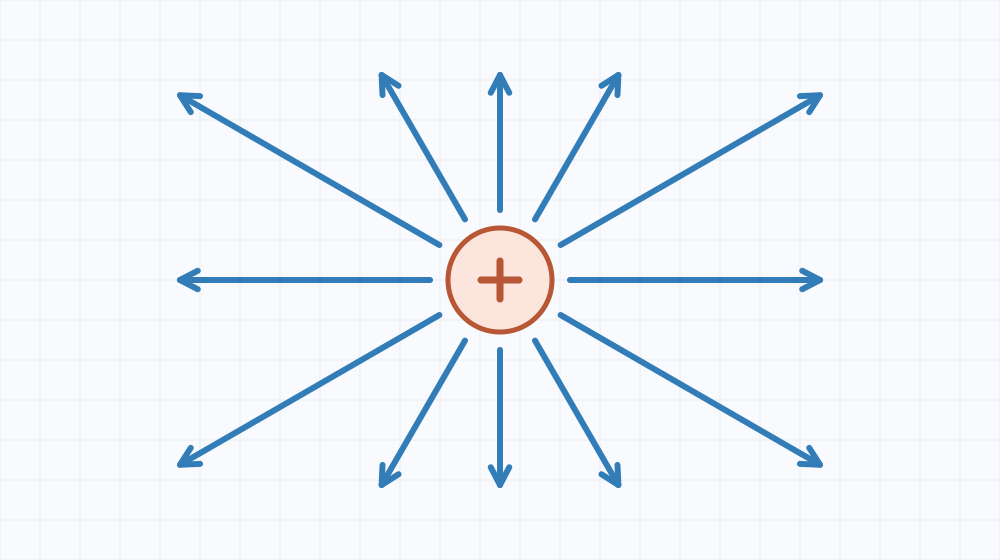
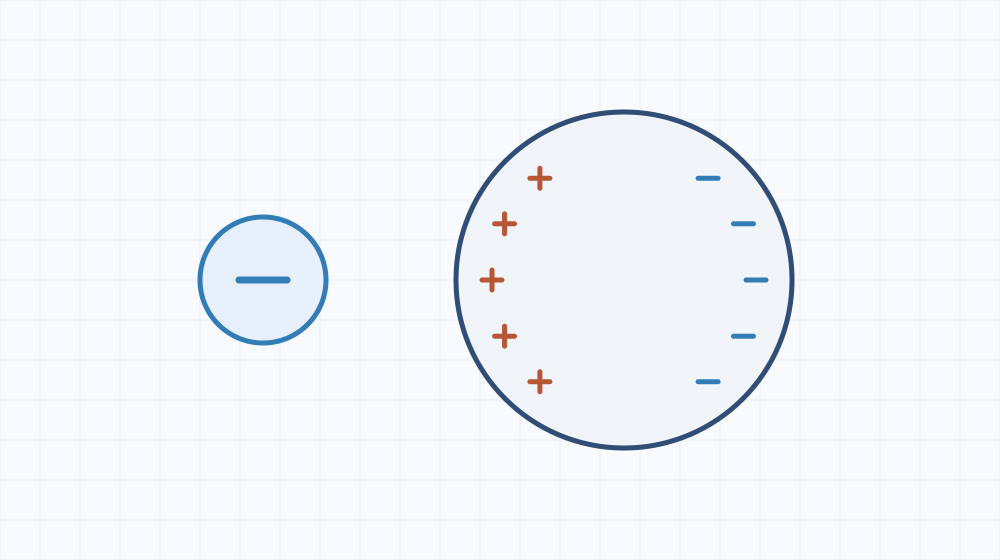

Πώς δρουν οι ηλεκτροστατικές δυνάμεις;
Ανάμεσα στο μπαλόνι και το χαρτί υπάρχει κάτι που δεν βλέπεις.
Συνέχισε το διάβασμα για να μάθεις…
- Πώς καταφέραμε να μετρήσουμε τη δύναμη ανάμεσα σε δύο φορτία.
- Πώς σχεδιάζουμε ένα ηλεκτρικό πεδίο και τι μπορούμε να διαβάσουμε στον χάρτη του.
- Γιατί ένα φορτισμένο μπαλόνι τραβά χαρτί που είναι ηλεκτρικά ουδέτερο.
Ένα μπαλόνι πλησιάζει
Έχεις τρίψει ποτέ ένα μπαλόνι στα μαλλιά σου; Αν το τραβήξεις σιγά σιγά προς τα πάνω, μερικές τρίχες σηκώνονται από μόνες τους και το ακολουθούν. Μπορείς να κάνεις το ίδιο κόλπο με κομματάκια χαρτί. Άφησέ τα πάνω σε ένα τραπέζι και φέρε από πάνω τους το μπαλόνι. Για λίγο δεν συμβαίνει τίποτα. Ύστερα, ενώ απομένει ακόμη λίγος αέρας ανάμεσα στο μπαλόνι και στο χαρτί, ένα κομματάκι τινάζεται προς τα πάνω και κολλάει!
Το περίεργο είναι πως θα μπορούσες να κάνεις την ίδια κίνηση με το ίδιο μπαλόνι πριν το τρίψεις και τα χαρτάκια θα έμεναν στη θέση τους. Επομένως το φύσημα του αέρα, όσο πλησιάζει το μπαλόνι, δεν αρκεί για να εξηγήσει τι βλέπουμε. Και όταν το χαρτί τελικά κολλήσει, η επαφή μπορεί να εξηγεί γιατί μένει εκεί, αλλά η πρώτη του κίνηση έχει ήδη συμβεί. Με ποιον τρόπο έφτασε η επίδραση από το ένα σώμα στο άλλο;
Θα ήταν δελεαστικό να πούμε πως το μπαλόνι έγινε κάτι σαν μαγνήτης. Δεν είναι παράλογος ο συσχετισμός, αφού κι ένας μαγνήτης μπορεί να σηκώσει έναν συνδετήρα πριν τον αγγίξει. Αλλά εδώ το μπαλόνι τραβά χαρτί, και το αν θα τα καταφέρει εξαρτάται από κάτι που του κάναμε τρίβοντάς το. Για να καταλάβουμε τι συμβαίνει, ας αφήσουμε τα χαρτάκια στο τραπέζι για λίγο. Θα επιστρέψουμε σ’ αυτά στο τέλος, όταν θα μπορούμε να εξηγήσουμε όχι μόνο γιατί κινούνται αλλά και γιατί κινούνται προς το μπαλόνι.
Τι αλλάζει όταν τρίβουμε δύο σώματα;
Το μπαλόνι μετά το τρίψιμο έχει διαφορετικό ηλεκτρικό φορτίο. Από ό,τι δείχνουν τα πειράματα, υπάρχουν δύο πρόσημα φορτίου, το θετικό και το αρνητικό. Φορτία του ίδιου προσήμου απωθούνται. Με αντίθετα πρόσημα έλκονται. Αν έχεις δύο ίδια μπαλόνια που τα έτριψες στο ίδιο ύφασμα και τα αφήσεις να κρέμονται από κλωστές, μπορείς να δοκιμάσεις το πρώτο μέρος της πρότασης. Καθώς τα φέρνεις το ένα κοντά στο άλλο, θα δεις τις κλωστές να γέρνουν προς τα έξω.
Γιατί όμως τα σημάδια + και −; Θα μπορούσαμε να τα είχαμε ονομάσει με δύο χρώματα, αλλά τα πρόσημα λένε κάτι παραπάνω. Αν ένα σώμα έχει ίσες ποσότητες θετικού και αρνητικού φορτίου, το άθροισμα είναι μηδέν. Αυτό εννοούμε όταν λέμε ότι είναι ηλεκτρικά ουδέτερο. Μέσα σε ένα ουδέτερο άτομο υπάρχουν και φορτισμένα πρωτόνια και φορτισμένα ηλεκτρόνια. Το καθένα έχει ίσο μέτρο φορτίου με το άλλο και αντίθετο πρόσημο. Ο ίδιος αριθμός από το καθένα δίνει συνολικό φορτίο μηδέν. Ένα σώμα μπορεί λοιπόν να είναι ουδέτερο και ταυτόχρονα να είναι γεμάτο από φορτία (κάτι που θα μας φανεί χρήσιμο αργότερα).
Όταν φέρνουμε σε επαφή δύο υλικά, ορισμένα ηλεκτρόνια μπορούν να περάσουν από το ένα στο άλλο. Το τρίψιμο φέρνει επανειλημμένα σε επαφή διαφορετικά σημεία των δύο επιφανειών. Αν περάσουν στο μπαλόνι περισσότερα ηλεκτρόνια από όσα φύγουν, το μπαλόνι φορτίζεται αρνητικά και τα μαλλιά αποκτούν θετικό φορτίο. Μπορείς να το σκεφτείς σαν μεταφορά χρημάτων από έναν λογαριασμό στον άλλο. Το υπόλοιπο του καθενός αλλάζει, ενώ αυτό που βγήκε από τον πρώτο εμφανίζεται στον δεύτερο. Παρόμοια, το συνολικό φορτίο διατηρείται. Από εδώ κι έπειτα, όταν λέμε «ένα φορτίο», συνήθως θα εννοούμε το φορτισμένο σώμα που το φέρει.
Πώς ζυγίζεις κάτι που δεν μπορείς να πιάσεις;
Το «απωθούνται» είναι μια αρχή. Ένας φυσικός όμως θα ήθελε να ξέρει και πόσο δυνατά. Αν φέρεις τις δυο κρεμασμένες κλωστές λίγο πιο κοντά, θα δεις ότι γέρνουν περισσότερο. Δύσκολα θα μπορούσες όμως να αποφασίσεις με το μάτι αν η απώθηση διπλασιάστηκε ή τετραπλασιάστηκε. Και τα μπαλόνια δεν βοηθούν ιδιαίτερα. Είναι μεγάλα, δεν ξέρεις πώς έχει μοιραστεί το φορτίο στην επιφάνειά τους και η απόσταση ανάμεσά τους αλλάζει μόλις αρχίσουν να κινούνται.
Το 1785, ο Γάλλος φυσικός Charles-Augustin de Coulomb παρουσίασε στην Ακαδημία των Επιστημών μια συσκευή που μπορούσε να μετρήσει τέτοιες μικρές δυνάμεις. Από ένα λεπτό κατακόρυφο σύρμα κρεμόταν μια ελαφριά οριζόντια ράβδος, με ένα μικρό φορτισμένο σφαιρίδιο στη μία άκρη. Πλησιάζοντας ένα δεύτερο σφαιρίδιο με φορτίο του ίδιου προσήμου, ανάγκαζε τη ράβδο να στραφεί και το σύρμα να στρίψει. Όσο πιο πολύ στρίβει το σύρμα, τόσο πιο πολύ αντιστέκεται, περίπου σαν το λάστιχο που στρίβεις για να γυρίσει η έλικα ενός παιχνιδιού.
Η ράβδος σταματούσε να στρέφεται όταν η επίδραση της ηλεκτρικής δύναμης εξισορροπούνταν από τη στρέψη του σύρματος. Μετρώντας τη γωνία σε διαφορετικές αποστάσεις, ο Coulomb μπορούσε να συγκρίνει τις δυνάμεις. Έτσι λειτουργούσε ο ζυγός στρέψης. Η αξία του ήταν ότι μια δύναμη που μόλις την έβλεπες να κουνά ένα σφαιρίδιο άφηνε τώρα ένα μετρήσιμο σημάδι πάνω σε μια κλίμακα. Το ερώτημα είχε γίνει πειραματικό. Τι θα δείξει η κλίμακα όταν η απόσταση γίνει διπλάσια;
Το αποτέλεσμα που περιγράφει ο νόμος του Coulomb είναι πως, με τα φορτία ίδια, η δύναμη γίνεται το ένα τέταρτο. Σε τριπλάσια απόσταση γίνεται το ένα ένατο. Αν πάλι κρατήσουμε σταθερή την απόσταση και διπλασιάσουμε το ένα φορτίο, διπλασιάζεται η δύναμη. Για δύο σημειακά φορτία με τιμές Q και q, σε απόσταση r στο κενό, το μέτρο F της δύναμης γράφεται ως εξής, με k μια σταθερά.
Η λέξη «σημειακό» σημαίνει ότι φερόμαστε στο φορτισμένο σώμα σαν να χωράει σε ένα σημείο. Είναι μια καλή προσέγγιση όταν το μέγεθός του είναι πολύ μικρό σε σχέση με τις αποστάσεις που μας ενδιαφέρουν. Η εξίσωση δίνει το μέτρο της δύναμης. Για να βρούμε προς τα πού δείχνει, κοιτάζουμε την ευθεία που ενώνει τα φορτία και θυμόμαστε ποια πρόσημα έλκονται. Τώρα μπορούμε να υπολογίσουμε τι κάνει το ένα φορτίο στο άλλο. Το πώς ακριβώς το κάνει, όμως, παραμένει ανοιχτό.
Τι υπάρχει γύρω από ένα μόνο φορτίο;
Ας στερεώσουμε ένα θετικό φορτίο στη μέση ενός άδειου δωματίου. Θα το ονομάσουμε πηγή. Έχουμε μαζί μας ένα δεύτερο, πολύ μικρό θετικό φορτίο. Το τοποθετούμε κάπου στο δωμάτιο, μετράμε τη δύναμη που νιώθει και ζωγραφίζουμε ένα βέλος. Ύστερα το μεταφέρουμε αλλού και κάνουμε το ίδιο. Σε κάθε σημείο, το βέλος δείχνει μακριά από την πηγή και είναι μεγαλύτερο εκεί όπου η δύναμη είναι ισχυρότερη. Αν κοιτούσαμε το δωμάτιο από πάνω, θα έμοιαζε σαν να έχουμε ζωγραφίσει έναν χάρτη του ανέμου γύρω από ένα σημείο από όπου ο αέρας φυσά προς όλες τις κατευθύνσεις.
Αν έρθει κάποιος άλλος με ένα διπλάσιο θετικό φορτίο και επαναλάβει τις μετρήσεις, τα βέλη του θα είναι διπλάσια. Έχουμε όμως μετρήσει την ίδια ιδιότητα του χώρου, οπότε θα ήταν βολικό να παίρνουμε τον ίδιο χάρτη. Διαιρούμε λοιπόν τη δύναμη με το φορτίο που χρησιμοποιήσαμε για να τη μετρήσουμε. Το αποτέλεσμα λέγεται ηλεκτρικό πεδίο. Σε κάθε σημείο έχει μέτρο και κατεύθυνση. Η κατεύθυνσή του είναι, εξ ορισμού, αυτή της δύναμης που θα δεχόταν εκεί ένα θετικό δοκιμαστικό φορτίο.
Γιατί διαλέξαμε τόσο μικρό δοκιμαστικό φορτίο; Κάθε φορτίο δημιουργεί και δικό του πεδίο, συνεπώς ο ανιχνευτής μας μπορεί κι αυτός να επηρεάσει αυτό που πάμε να μετρήσουμε. Φαντάσου να προσπαθείς να μετρήσεις τη θερμοκρασία μιας σταγόνας νερού βουτώντας μέσα ένα θερμόμετρο που μόλις έβγαλες από το ψυγείο. Η μέτρηση θα αλλάξει τη θερμοκρασία της σταγόνας. Γι’ αυτό εδώ εννοούμε ένα δοκιμαστικό φορτίο αρκετά μικρό ώστε η επίδρασή του στις πηγές να είναι αμελητέα. Μπορούμε έτσι να δώσουμε τον χάρτη σε κάποιον και να τον αφήσουμε να υπολογίσει μόνος του τη δύναμη για το φορτίο που τον ενδιαφέρει.
Στην πρώτη σχέση, το q είναι το φορτίο που δέχεται τη δύναμη. Αν είναι αρνητικό, η δύναμη δείχνει αντίθετα από το βέλος του πεδίου. Στη δεύτερη σχέση, το Q είναι η σημειακή πηγή και το E είναι το μέτρο του πεδίου της σε απόσταση r στο κενό. Έτσι επιστρέφει ο νόμος του αντιστρόφου τετραγώνου, αλλά τώρα το ένα φορτίο έχει εξαφανιστεί από τον υπολογισμό του πεδίου. Μπορούμε να μιλάμε για το πεδίο της πηγής ακόμη και σε ένα σημείο όπου δεν έχουμε βάλει τίποτα για να το ανιχνεύσει.
Κι αν βάλουμε δύο πηγές στο δωμάτιο;
Ας τοποθετήσουμε τώρα δύο ίσα θετικά φορτία σε ένα τραπέζι, ένα στα αριστερά και ένα στα δεξιά. Φαντάσου πρώτα ότι υπάρχει μόνο το αριστερό φορτίο. Στο σημείο ακριβώς στη μέση θα ζωγραφίζαμε ένα βέλος προς τα δεξιά, μακριά του. Αν υπήρχε μόνο το δεξί φορτίο, θα ζωγραφίζαμε ένα εξίσου μεγάλο βέλος προς τα αριστερά. Όταν υπάρχουν και τα δύο, προσθέτουμε τα βέλη σαν διανύσματα. Εδώ αλληλοαναιρούνται, άρα ένα δοκιμαστικό φορτίο ακριβώς στη μέση δεν θα δεχόταν συνολική ηλεκτρική δύναμη.
Αν μετακινήσεις το δοκιμαστικό φορτίο λίγο προς τα αριστερά, η συμμετρία χαλάει. Η αριστερή πηγή είναι τώρα πιο κοντά και το βέλος της νικάει, οπότε ένα θετικό δοκιμαστικό φορτίο επιταχύνεται προς τα δεξιά. Πήγαινέ το τώρα λίγο πάνω από τη μέση, όπως βλέπεις το τραπέζι από ψηλά. Τα δύο βέλη έχουν αντίθετα οριζόντια κομμάτια που αλληλοαναιρούνται, αλλά και τα δύο δείχνουν εν μέρει προς τα πάνω. Το άθροισμά τους δείχνει ίσια προς τα πάνω. Η ίδια διάταξη δίνει τρεις διαφορετικές απαντήσεις σε τρία σημεία που μπορείς να καλύψεις με την παλάμη σου.
Κράτησε έπειτα τη διάταξη όπως είναι και κάνε το δεξί φορτίο αρνητικό, διατηρώντας το ίδιο μέτρο. Αυτό το ζευγάρι λέγεται ηλεκτρικό δίπολο. Στη μέση η θετική πηγή σπρώχνει το δοκιμαστικό φορτίο προς τα δεξιά και η αρνητική το τραβά επίσης προς τα δεξιά. Τα βέλη τώρα συμφωνούν. Παρόλο που το συνολικό φορτίο των πηγών είναι μηδέν, το πεδίο ακριβώς στη μέση είναι διπλάσιο από εκείνο που θα έδινε η καθεμία μόνη της. Συνεπώς, αν κάποιος σου πει μόνο το συνολικό φορτίο μιας διάταξης, θα χρειαστεί να τον ρωτήσεις και πού βρίσκονται τα φορτία της.
Αυτός ο τρόπος να υπολογίζουμε τη συμβολή κάθε πηγής χωριστά και να τις προσθέτουμε λέγεται αρχή της επαλληλίας. Μπορούμε να τον χρησιμοποιήσουμε για δύο πηγές, για πέντε στη σειρά ή για ένα ολόκληρο φορτισμένο σώμα που το χωρίζουμε νοερά σε μικρά κομμάτια. Το ίδιο βήμα επαναλαμβάνεται κάθε φορά. Σχεδιάζουμε όσα βέλη χρειάζονται, ένα για την κάθε πηγή, και μετά προσθέτουμε μόνο εκείνα που ανήκουν στο ίδιο σημείο.
Μπορούμε να ζωγραφίσουμε το πεδίο;
Τον 19ο αιώνα, ο Michael Faraday χρησιμοποίησε γραμμές για να μελετήσει πώς κατανέμονται στον χώρο οι ηλεκτρικές και οι μαγνητικές δυνάμεις. Ίσως έχεις δει το γνωστό πείραμα με ρινίσματα σιδήρου πάνω σε χαρτί και έναν μαγνήτη από κάτω. Με ένα ελαφρύ χτύπημα στο χαρτί, τα ρινίσματα γυρίζουν και μαζεύονται σε σειρές. Το σχέδιο αποκαλύπτει κάτι που δεν έβλεπες κοιτάζοντας μόνο τον μαγνήτη. Σου δείχνει προς ποια διεύθυνση προσανατολίζονται τα ρινίσματα σε διάφορα σημεία γύρω του. Για το ηλεκτρικό πεδίο θα κάνουμε κάτι αντίστοιχο με τα βέλη που ήδη ξέρουμε να σχεδιάζουμε.

Ξεκίνα από ένα σημείο του χάρτη και κάνε ένα πολύ μικρό βήμα προς την κατεύθυνση του βέλους. Από τη νέα σου θέση κοίτα πάλι το βέλος και κάνε άλλο ένα μικρό βήμα. Αν συνεχίσεις έτσι, θα χαράξεις μια δυναμική γραμμή. Γύρω από μία θετική σημειακή πηγή αυτές οι γραμμές ανοίγονται σαν ακτίνες. Στο δίπολο, οι γραμμές που συνδέουν τις δύο πηγές ξεκινούν από τη θετική και καταλήγουν στην αρνητική. Αν δυο γραμμές τέμνονταν σε ένα σημείο όπου υπάρχει μη μηδενικό πεδίο, θα έπρεπε το βέλος εκεί να δείχνει προς δύο διαφορετικές κατευθύνσεις συγχρόνως. Έτσι μπορείς να ελέγξεις με μια ματιά αν το σκίτσο σου στέκει.
Κάτι που εύκολα μπερδεύει εδώ είναι πως η γραμμή μοιάζει με δρόμο που θα ακολουθούσε ένα φορτίο. Αν το αφήσεις ακίνητο στην αρχή, η πρώτη του κίνηση πράγματι θα συμφωνεί με τη γραμμή (αν είναι θετικό). Ύστερα όμως έχει ήδη αποκτήσει ταχύτητα. Η δύναμη στη νέα του θέση αλλάζει αυτή την ταχύτητα, ενώ η κίνησή του συνεχίζεται. Σκέψου μια μπάλα που πετάς οριζόντια. Η βαρύτητα τη σπρώχνει πάντα προς τα κάτω, αλλά η μπάλα έχει ήδη λόγο να προχωρά και μπροστά. Ο χάρτης του πεδίου μάς λέει πώς αλλάζει η ταχύτητα σε κάθε σημείο. Για να βρούμε την τροχιά, πρέπει να ξέρουμε και ποια ταχύτητα είχε το φορτίο όταν έφτασε εκεί.
Γιατί το ίδιο σημείο έχει δύο χάρτες;
Αν περάσεις από τα βέλη σ’ έναν χάρτη με χρώματα, μπορεί να σου περάσει από το μυαλό ότι απλώς άλλαξε ο τρόπος που ζωγραφίζουμε την ίδια ποσότητα. Υπάρχει πράγματι ένας τέτοιος χάρτης, που με το χρώμα δείχνει πόσο ισχυρό είναι το ηλεκτρικό πεδίο σε κάθε σημείο. Υπάρχει όμως και ένας δεύτερος, που ζωγραφίζει το ηλεκτρικό δυναμικό. Το δυναμικό μάς βοηθά να απαντήσουμε σε μια διαφορετική ερώτηση. Πόσο αλλάζει η δυναμική ενέργεια ανά μονάδα φορτίου όταν το φορτίο μεταφερθεί από ένα σημείο σε ένα άλλο;

Για να πιάσουμε τη διαφορά, φαντάσου έναν χάρτη υψομέτρου. Το ύψος κάνει για το τοπίο κάτι παρόμοιο με αυτό που κάνει το δυναμικό για τα φορτία. Το πόσο απότομα κατηφορίζει το έδαφος και προς τα πού είναι άλλη πληροφορία. Μπορεί να στέκεσαι σε μια επίπεδη βουνοκορφή και να έχεις πολύ μεγάλο υψόμετρο. Μπορεί επίσης να βρίσκεσαι σε μια απότομη πλαγιά ακριβώς στο ύψος της θάλασσας. Παρόμοια, το ηλεκτρικό πεδίο δείχνει προς την κατεύθυνση που το δυναμικό πέφτει πιο απότομα. Το μέτρο του μας λέει πόσο γρήγορη είναι αυτή η πτώση με την απόσταση.
Ας ξαναδούμε τα δύο ίσα θετικά φορτία. Το πεδίο στη μέση μηδενίζεται, αλλά το δυναμικό εκεί είναι θετικό, αν έχουμε ορίσει το μηδέν του πολύ μακριά από τις πηγές (στο άπειρο). Οι δυο θετικές συνεισφορές στο δυναμικό προστίθενται σαν αριθμοί, χωρίς βέλη που να μπορούν να αλληλοαναιρεθούν. Αν κάνουμε τη δεξιά πηγή αρνητική, στη μέση το δυναμικό είναι μηδέν ενώ το πεδίο είναι ισχυρό. Να λοιπόν δύο τρόποι να βρεθούμε σε ένα «μηδέν», που μας λένε εντελώς διαφορετικά πράγματα. Όταν ανοίξεις το εργαστήριο, μπορείς να κοιτάξεις το ίδιο σημείο με τα βέλη και με τα χρώματα και να δεις τη διαφορά με τα μάτια σου.
Τι θα κάνει ένα φορτίο που αφήνουμε ακίνητο;
Μέχρι τώρα το δοκιμαστικό φορτίο μας χρησίμευε για να ζωγραφίζουμε βέλη. Ας το αφήσουμε ελεύθερο. Αν η δύναμη είναι ίδια, θα κινηθεί με τον ίδιο τρόπο ένα ελαφρύ φορτίο και ένα βαρύ; Σκέψου να σπρώχνεις με την ίδια δύναμη ένα άδειο καρότσι και ένα φορτωμένο. Το πρώτο αποκτά ταχύτητα πιο εύκολα. Με τον ίδιο τρόπο, ένα δοκιμαστικό φορτίο με μεγαλύτερη μάζα θα έχει μικρότερη επιτάχυνση αν δεχτεί την ίδια ηλεκτρική δύναμη.
Στο εργαστήριο οι πηγές μένουν εκεί όπου τις τοποθετείς και κάθε δοκιμαστικό φορτίο είναι θετικό. Μόλις το αφήσεις, ξεκινά από ηρεμία. Αν αλλάξεις το φορτίο του, αλλάζει η δύναμη που δέχεται. Αν αλλάξεις τη μάζα του, αλλάζει το πόσο γρήγορα αποκρίνεται στην ίδια δύναμη. Και στις δύο περιπτώσεις τα βέλη του πεδίου των πηγών μένουν εκεί που ήταν. Έτσι μπορείς να πειράξεις μία ποσότητα τη φορά και να δεις ποιο μέρος της ιστορίας αλλάζει.
Διαδραστικό Εργαστήριο
Από τα «Παραδείγματα» διάλεξε «Ένα» για να βάλεις στον χώρο μόνο μία θετική πηγή. Στην «Εμφάνιση», τα «Βέλη πεδίου» θα σε βοηθήσουν να προβλέψεις την πρώτη κίνηση του δοκιμαστικού φορτίου. Διάλεξε ένα σημείο, βρες με το μάτι προς τα πού θα κινηθεί και ύστερα σύρε εκεί ένα «Δοκιμαστικό φορτίο» από την εργαλειοθήκη. Μπορείς επίσης να πατήσεις πρώτα το εργαλείο και μετά το σημείο που διάλεξες.
Τι να παρατηρήσεις…
- Στο παράδειγμα «Ένα», κράτα την πρώτη θέση που διάλεξες και δες προς τα πού φεύγει το δοκιμαστικό φορτίο. Επίλεξε έπειτα την πηγή, κάνε το «Φορτίο» της αρνητικό και άφησε ένα νέο δοκιμαστικό φορτίο περίπου στην ίδια θέση. Ποιο βέλος άλλαξε, τι άλλαξε στην πρώτη κίνηση και ποιο από τα δύο φορτία άλλαξε πρόσημο;
- Διάλεξε «Δίπολο» και ενεργοποίησε το «Ηλεκτρικό δυναμικό» μαζί με τα «Βέλη πεδίου». Κοίτα στη μέση, εκεί όπου χωρίζονται το πορτοκαλί και το μπλε. Προς τα πού δείχνει το πεδίο; Τώρα κάνε την αρνητική πηγή θετική, με το ίδιο μέτρο φορτίου, και ξανακοίτα το ίδιο σημείο. Σε ποια περίπτωση μηδενίζεται το πεδίο και σε ποια το δυναμικό;
- Επίστρεψε στο «Δίπολο», άνοιξε τις «Δυναμικές γραμμές» και άφησε ένα θετικό δοκιμαστικό φορτίο πάνω και λίγο αριστερά από το μέσο των πηγών, αρκετά μακριά ώστε να φαίνεται το ίχνος του πριν πλησιάσει σε πηγή. Ποια γραμμή έχει περίπου την ίδια αρχική κατεύθυνση με το ίχνος; Συνεχίζουν να πηγαίνουν μαζί ή χωρίζουν;
- Κράτησε τις πηγές στη θέση τους και διάλεξε ένα σημείο εκκίνησης. Παρατήρησε πόσο γρήγορα ξεκινά το δοκιμαστικό φορτίο. Αύξησε τη «Μάζα» στα «Δοκιμαστικά φορτία», άφησε το φορτίο πάλι από την ίδια θέση με την ίδια τιμή φορτίου και σύγκρινε τις πρώτες στιγμές της κίνησης. Τι παρέμεινε ίδιο στον χάρτη;
Και το χαρτί που αφήσαμε στο τραπέζι;
Επιτέλους, ώρα να γυρίσουμε στα χαρτάκια. Το μπαλόνι έχει λόγο να είναι φορτισμένο, αφού το τρίψαμε. Το χαρτί όμως ήταν ηλεκτρικά ουδέτερο. Γιατί να το τραβήξει; Θυμήσου ότι μέσα στο χαρτί υπάρχουν και θετικά και αρνητικά φορτία. Ας πούμε πως το μπαλόνι είναι αρνητικό. Τα αρνητικά φορτία του χαρτιού απωθούνται από το μπαλόνι και τα θετικά έλκονται. Ακόμη κι αν τα φορτία δεν μπορούν να ταξιδέψουν ελεύθερα μέσα στο χαρτί, τα κέντρα του θετικού και του αρνητικού φορτίου μπορούν να μετατοπιστούν ελάχιστα μεταξύ τους μέσα στα μόρια.
Λέμε τότε ότι το χαρτί πολώνεται. Ένα κομμάτι μέταλλο μπορεί επίσης να πολωθεί, αλλά εκεί μερικά ηλεκτρόνια κινούνται πολύ πιο ελεύθερα. Φέρε ένα αρνητικό σώμα κοντά σε ένα ουδέτερο μεταλλικό σφαιρίδιο και ηλεκτρόνια θα μετακινηθούν προς τη μακρινή πλευρά. Η κοντινή πλευρά, όπου έμεινε έλλειμμα ηλεκτρονίων, αποκτά θετικό φορτίο. Στο χαρτί έχουμε κυρίως πολύ μικρές μετατοπίσεις μέσα στα μόριά του, αλλά η ιδέα που μας χρειάζεται είναι η ίδια. Προς το μπαλόνι βρίσκεται λίγο πιο κοντά το ετερώνυμο φορτίο και λίγο πιο μακριά το ομώνυμο.

Εδώ χρησιμεύει αυτό που μάθαμε από τον Coulomb. Η έλξη δρα σε μικρότερη απόσταση και είναι ισχυρότερη από την άπωση. Αν το χαρτάκι βρεθεί αρκετά κοντά, η διαφορά αρκεί για να το σηκώσει από το τραπέζι. Αν αντιστρέφαμε το πρόσημο του μπαλονιού, θα αντιστρεφόταν και η πόλωση και πάλι η έλξη θα δρούσε στη μικρότερη απόσταση. Να λοιπόν γιατί το χαρτί δεν χρειάζεται να έχει αποκτήσει δικό του συνολικό φορτίο για να τιναχτεί στον αέρα. Αρκεί που τα φορτία του βρίσκονται προσωρινά σε ελαφρώς διαφορετικές θέσεις.
Και κάτι τελευταίο. Πότε μαθαίνει το χαρτί ότι πλησιάζει το μπαλόνι;
Ας αλλάξουμε την κλίμακα του πειράματος. Βάλε στη θέση του μπαλονιού μια πηγή πολύ μακριά και στη θέση του χαρτιού ένα δοκιμαστικό φορτίο που μπορεί να καταγράψει τη δύναμη πάνω του με ένα πολύ καλό ρολόι. Αν μετακινήσουμε ξαφνικά την πηγή, πότε θα αλλάξει η ένδειξή του; Αν μείνουμε στον νόμο του Coulomb για ακίνητα φορτία, είναι εύκολο να μπούμε στον πειρασμό να χρησιμοποιήσουμε αμέσως τη νέα απόσταση r. Θα είχαμε τότε μια καινούργια δύναμη παντού την ίδια στιγμή, όσο μακριά κι αν ήταν το δοκιμαστικό φορτίο.
Στη θεωρία του ηλεκτρομαγνητισμού που διατύπωσε ο James Clerk Maxwell τον 19ο αιώνα, η μεταβολή διαδίδεται από τη μία περιοχή του χώρου στην επόμενη. Στο κενό ταξιδεύει με την ταχύτητα του φωτός. Αν η πηγή είναι ένα δευτερόλεπτο φωτός μακριά, το δοκιμαστικό φορτίο θα αρχίσει να αισθάνεται την αλλαγή ένα δευτερόλεπτο αργότερα. Μέχρι τότε, η δύναμή του καθορίζεται από το πεδίο που υπάρχει ήδη στη θέση του. Όσο για το μπαλόνι και το χαρτί, σε απόσταση δέκα εκατοστών η καθυστέρηση είναι περίπου ένα τρίτο του δισεκατομμυριοστού του δευτερολέπτου. Γι’ αυτό με το μάτι όλα μοιάζουν ακαριαία.
Αν σύρεις μια πηγή στο εργαστήριο, ο χάρτης αλλάζει αμέσως επειδή το πρόγραμμα υπολογίζει διαδοχικά στατικές διατάξεις. Είναι σαν να έχουμε δύο φωτογραφίες της ίδιας σκηνής, μία πριν και μία αφού κατακαθίσει η αλλαγή. Η ηλεκτροστατική εξηγεί πολύ καλά καθεμία από τις δύο φωτογραφίες. Για να δούμε πώς ταξίδεψε η μεταβολή από την πηγή μέχρι το δοκιμαστικό φορτίο, χρειαζόμαστε την ιστορία ανάμεσα στις δύο. Αυτή θα παρακολουθήσουμε στο κείμενο για την ακτινοβολία.
Θέλεις κι άλλο;
- Η πρώτη εργασία του Coulomb για τον ηλεκτρισμό και τον μαγνητισμό (1785)
- Το χειρόγραφο του Faraday για τις δυναμικές γραμμές (1851)
- Ο ορισμός του ηλεκτρικού πεδίου στο OpenStax
- Αγωγοί, μονωτές και πόλωση στο OpenStax
- Υπολογισμός του ηλεκτρικού δυναμικού στο OpenStax
- Πεδία και ηλεκτρομαγνητικά κύματα στο OpenStax